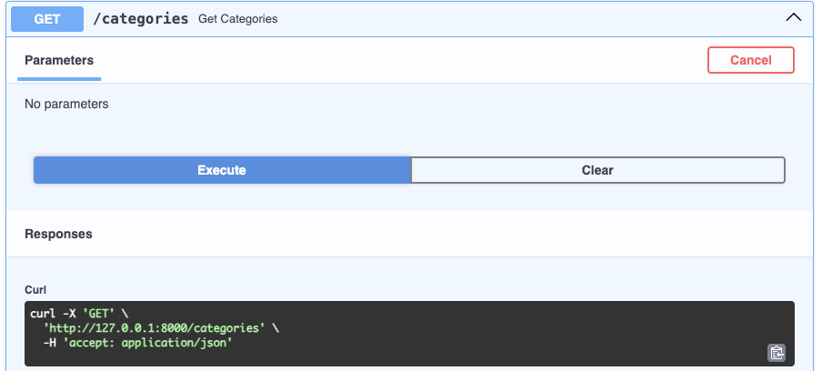
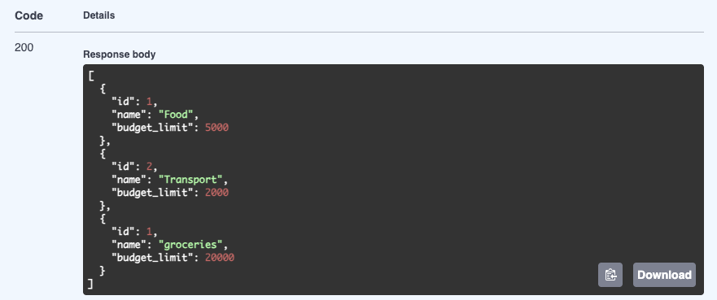
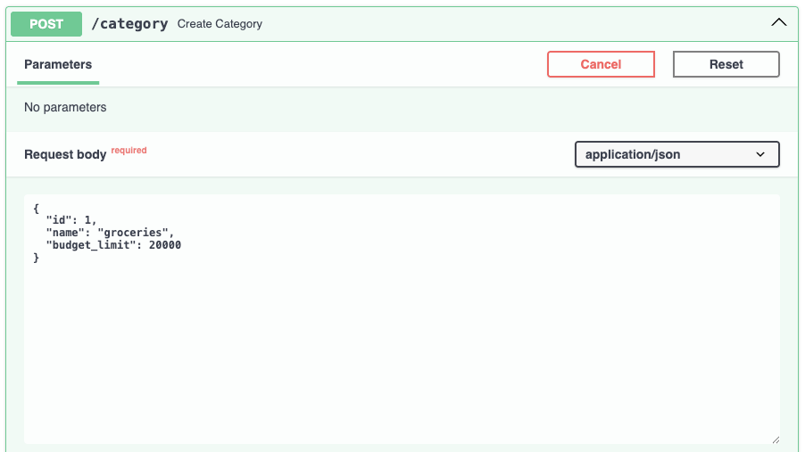
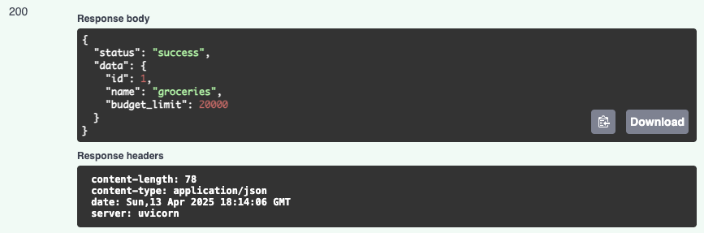

Практика 1.1. Создание базового приложения на FastAPI
Установка FastAPI
pip install fastapi[all]
Запуск реализованного приложения
uvicorn main:app --reload
Функционал
GET-Запрос

Результат

POST-Запрос

Результат

Листинг
models.py
from typing import List, Optional
from pydantic import BaseModel
from enum import Enum
class TransactionType(str, Enum):
income = "income"
expense = "expense"
class Category(BaseModel):
id: int
name: str
budget_limit: Optional[float] = None
class Transaction(BaseModel):
id: int
type: TransactionType
amount: float
category: Category
description: Optional[str] = None
class Budget(BaseModel):
category_id: int
limit: float
main.py
from fastapi import FastAPI
from models import Transaction, Category
from typing import List
app = FastAPI()
transactions_db: List[Transaction] = []
categories_db: List[Category] = [
Category(id=1, name="Food", budget_limit=5000),
Category(id=2, name="Transport", budget_limit=2000),
]
transaction_id_counter = 1
@app.get("/")
def hello():
return "Hello, finance user!"
@app.get("/transactions")
def get_transactions():
return transactions_db
@app.post("/transactions")
def create_transaction(transaction: Transaction):
global transaction_id_counter
transaction.id = transaction_id_counter
transaction_id_counter += 1
transactions_db.append(transaction)
return {"status": "success", "data": transaction}
@app.get("/categories")
def get_categories():
return categories_db
@app.get("/category/{category_id}")
def get_category(category_id: int):
for category in categories_db:
if category.id == category_id:
return category
return {"error": "Category not found"}
@app.post("/category")
def create_category(category: Category):
categories_db.append(category)
return {"status": "success", "data": category}